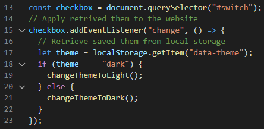

1. Color palette
Choosing a color palette is the never-ending story for me, so I had to be strict and made some decisions. My best friend was Hue Mint where I was choosing my color palette from and confirming the contrast rules on Adobe Color Contrast.

2. Dark theme
As a second step I made a dark theme. I used JS and local storage to do that and created new variables for dark mode. However, before I had to make sure my contrast is sufficient, so I have used provided color tester file to make adjustments.
3. Animations
Last part was adding the animations, we made some progress while learning GSAP so I have decided to apply scroll trigger and some simple tween while using methods gsap.to and gsap.from and the best one for more than one action gsap.timeline.